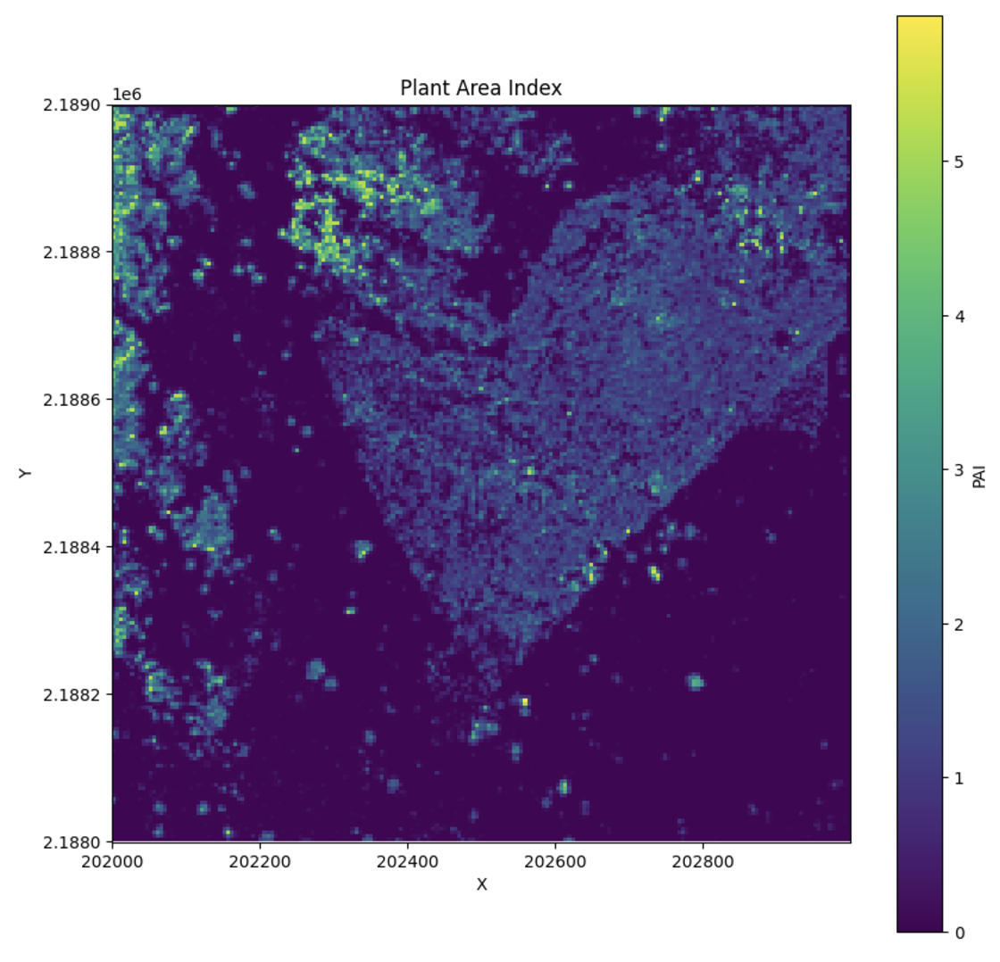

Plant Area Index (PAI)¶
Theory¶
Plant Area Index (PAI) is a measure of the total plant material in a vertical column of the forest. It is calculated as the sum of the Plant Area Density (PAD) across all layers in the canopy.
\[ PAI = \sum_{i=1}^{n} PAD_{i-1,i} \]
Where: - \( PAI \) is the Plant Area Index. - \( PAD_{i-1,i} \) is the Plant Area Density between adjacent layers \( i-1 \) and \( i \). - \( n \) is the total number of layers in the vertical column.
PAI provides an aggregated view of plant material from the ground to the top of the canopy by summing the PAD for each vertical layer.
Calculating PAI¶
To calculate PAI, first calculate PAD, then:
1 2 3 4 5 6 7 8 9 10 11 12 13 14 15 16 | |
